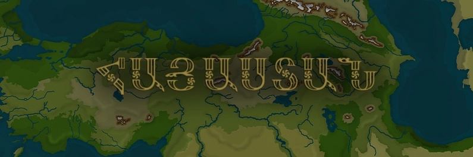
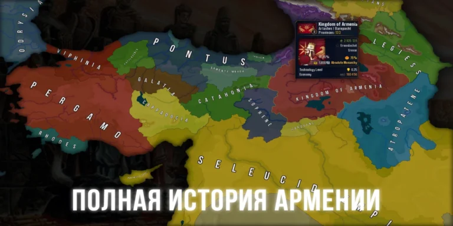
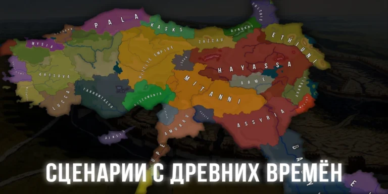
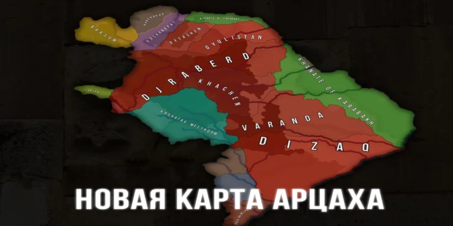
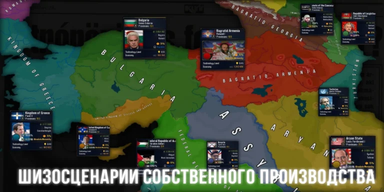

Age of History 2. Հայաստան
Սքրինշոթներ




×

Տեղեկություն
«HAYASTAN»-ը առաջին Age of History-ի մոդն է, որը կենտրոնացած է Հայաստանի վրա, որն ունի երկար և հետաքրքիր պատմություն, ինչպես նաև նրա հարևան երկրների վրա,։ Հայաստանի սահմանները տարիների ընթացքում փոխվել են, և դուք հնարավորություն ունեք նստել Հայաստանի գահին և այն կրկին մեծ դարձնել։
Մոդը իր մեջ ներառում է՝
- 2 նոր քարտեզ
- Ավելի քան 200 ցիվիլիզացիա՝ հայկական (և հունական) պատմական անուններով
- 60 ձևավորվող ցիվիլիզացիաներ
- 500+ վերամշակված քաղաքներ՝ պատմական անուններով
- 300+ առաջնորդներ՝ իրենց դիմանկարներով
- Ավելի քան 70 սցենար՝ իրադարձություններով և առանց
- Նոր երաժշտական soundpack։
Ինչպե՞ս Տեղարդրել
Սովորականի պես բացել ներբեռնված .exe-ն կամ .apk-ն